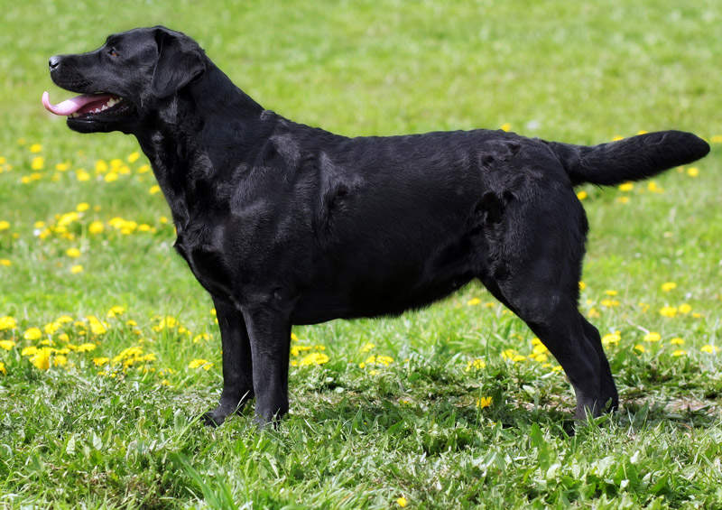

Labradoro retriveris: veislės istorija 
Labradoro retriveris: veislės istorija Labradoro retriveriai yra kilę ne iš Labradoro, kaip būtų galima pamanyti, bet iš Niūfaundlendo vakarinės pakrantės, kur XVII amžiuje Labradoro retriverių protėviai talkininkaudavo statant tinklus lediniame vandenyje. 1860 metais šie šunys buvo nugabenti į Didžiąją Britaniją, kurioje labai greitai sulaukė žvejų susidomėjimo. Taip pat Labradoro retriveriai (tuo metu vadinti šv. Jono vandens šunimis) buvo puikūs pagalbininkai medžioklėje. Vėliau buvo įvertinti ir Labradoro retriverių gebėjimas atnešti įvairius daiktus jų nepažeidžiant dantimis. Šie šunys labai sužavėjo Malmesburio grafą, kuris pradėjo juos veisti ir suteikė naują pavadinimą. Buvo siekiama dar labiau pagerinti šuns darbines savybes, todėl tuometiniai šunys buvo kryžminami su seteriais ir kitais retriveriais.